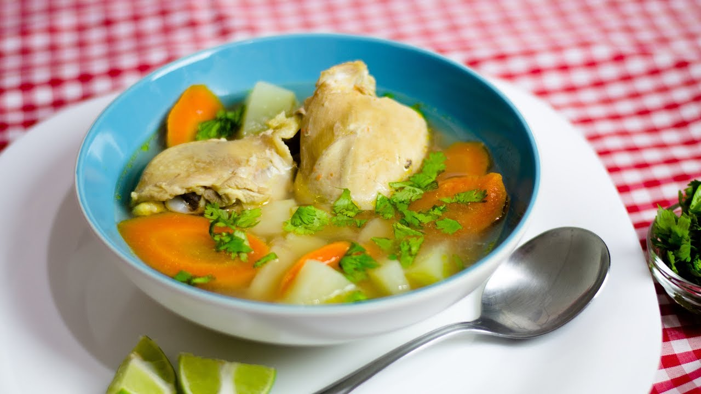

Receta de Caldo de Pollo
Ingredientes:
- 1 kg de pollo en trozos
- 1 cebolla blanca en cuartos
- 2 dientes de ajo
- 2 zanahorias en trozos grandes
- 2 ramas de apio en trozos grandes
- 1 chile serrano o jalapeño, sin semillas y picado (opcional)
- 1/2 taza de cilantro fresco picado
- 2 litros de agua
- Sal y pimienta al gusto
- Limones en cuartos para servir
Instrucciones:
- En una olla grande, coloca los trozos de pollo, la cebolla, el ajo, la zanahoria, el apio, el chile serrano o jalapeño (si lo usas), el cilantro, la sal y la pimienta.
- Vierte el agua y lleva la olla a fuego alto. Cuando comience a hervir, reduce el fuego a medio-bajo y deja cocinar a fuego lento durante al menos una hora, o hasta que el pollo esté cocido y tierno.
- Retira los trozos de pollo de la olla y desmenúzalos con un tenedor.
- Regresa el pollo desmenuzado a la olla y mezcla bien. Prueba el caldo y ajusta la sal y la pimienta según sea necesario.
- Sirve el caldo de pollo caliente, con limones en cuartos para exprimir en el momento de servir.
¡Que lo disfrutes!